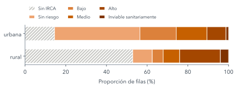
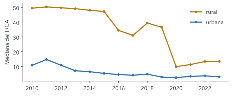

18 Mira antes de modelar
Quarto, publicación reproducible, agentes de programación, Markdown, Python, EPUB, análisis de datos, k-means
Antes de cualquier modelo, mira los datos. Explorar te dice lo que un modelo va a poder ver y lo que no: qué columnas están casi vacías, qué zonas nunca se miden y si una serie cambia de nivel por razones que no tienen nada que ver con lo que mide. Nada de eso aparece como un error. Un algoritmo de agrupamiento agrupará de buena gana filas que solo se volvieron comparables porque se llenaron sus vacíos, y el gráfico de una serie cuyo método cambió dibujará una tendencia que no existe.
Los datos del agua tienen dos sorpresas de ese tipo que un gráfico puede mostrar, y varias más que solo se ven de cerca, en un solo lugar. Para esas, este capítulo presenta a Tunja, el municipio que sigue el resto de la parte.
- Hacerle cuatro preguntas a cualquier tabla antes de modelarla.
- Interpretar dónde falta el IRCA, y decidir qué permite afirmar al análisis descartar esas filas.
- Decidir si un salto en una serie es un avance o un cambio de método.
- Revisar la primera página del agente contra resultados que ya conoces.
18.1 Para qué sirve explorar
Vale la pena responder cuatro preguntas antes de modelar cualquier tabla, y este capítulo se las hace a los datos del agua:
- ¿Qué tan grande es? Filas y columnas, y qué es una fila.
- ¿Qué falta, y dónde? Los faltantes por columna y por grupo (aquí, por zona).
- ¿Cómo se distribuyen los valores clave? Para el IRCA, el conteo de filas en cada nivel de riesgo.
- ¿Cómo se mueven en el tiempo? Para el IRCA, su mediana (el valor del medio, con la mitad de las filas por debajo) por año y zona.
Las respuestas deciden lo que puede afirmar el análisis. Si un grupo está casi todo vacío, las conclusiones sobre él se apoyan en la minoría que se midió, y esa minoría puede no ser típica.
18.2 Lo rural: menos datos, más riesgo

Lado a lado, la Figura 18.1 muestra las 31,416 filas. El 53% de las filas rurales no tiene ningún IRCA, frente al 14% de las urbanas, porque muchos sistemas rurales nunca se muestrean, o no los opera un prestador y por eso quedan fuera de la tabla de prestadores. Entre las filas rurales que sí tienen un valor, el 51% cae en los niveles alto o inviable sanitariamente, frente al 12% de las urbanas. Esas proporciones juntan los catorce años. Solo en 2023, fueron del 28% y del 6%, las cifras con las que empieza el análisis del agua, después de las caídas del IRCA rural que muestra la Figura 18.2 más abajo.
Los dos hechos se suman en la peor dirección: las zonas con peores puntajes son también las que menos se puntúan. Los vacíos no son aleatorios. Dependen de la zona, que los datos registran, y quizá del riesgo mismo, que no registran: en estadística, al segundo tipo se le llama faltantes no aleatorios, y ningún relleno puede repararlo. Cualquier análisis que descarte las filas sin IRCA, como debe hacerlo el del análisis del agua, describe solo los sistemas rurales muestreados, y debería decirlo.
Supón que cada IRCA rural faltante se llenara con la mediana de las filas rurales con puntaje. ¿El agua rural se vería entonces más segura o más riesgosa de lo que realmente es?
Probablemente más segura, aunque nadie puede comprobarlo. Muchos sistemas sin puntaje son sistemas que no opera ningún prestador, y los sistemas de autoabastecimiento puntúan mucho peor a nivel nacional (Tabla 17.1), así que el relleno convertiría “desconocido, y probablemente peor” en “típico”. Por eso el análisis descarta estas filas en lugar de llenarlas (Sección 19.1).

La cuarta pregunta importa, como muestra la Figura 18.2. La mediana rural cae bruscamente en 2016 y otra vez en 2020. Eso podría ser una mejora del agua rural, o un cambio en qué sistemas se muestrearon; el README de los datos advierte que la caída de 2020 puede reflejar el muestreo, y los datos abiertos no pueden distinguir lo uno de lo otro. Un análisis que compara años no debería leer la caída como un avance sin evidencia de fuera de la tabla.
La mediana rural también termina muy por debajo de la cifra rural nacional de la Tabla 17.1: 13.4 en 2023, en el nivel bajo, frente al 36.5 del INCA. Dos cosas explican la brecha. La tabla contiene solo sistemas operados por prestadores (Sección 17.2), y la mediana de las zonas es la zona del medio, a la que las peores zonas no arrastran hacia arriba, y que no está ponderada por cuánta gente bebe esa agua.
18.3 Un municipio para seguir: Tunja
Los agregados esconden los detalles que hacen que una variable sea confiable o no, así que de aquí en adelante esta parte sigue a un municipio a lo largo de cada paso. Tunja, la capital del departamento de Boyacá, es un buen caso por tres razones que están en sus filas. Como capital de departamento, carga con la advertencia sobre la cobertura que tienen todas las capitales. A diferencia de la mayoría de los municipios, tiene un IRCA para las dos zonas en todos los años: solo 117 de los 1,103 municipios tienen uno para su zona rural en los catorce años, así que el análisis nunca va a perder a Tunja por falta de un puntaje. Y sus dos zonas difieren: su agua rural puntuó en el nivel de riesgo alto todos los años de 2010 a 2014, mientras que su agua urbana nunca puntuó por encima de 11.9.
Tunja tiene 28 filas, dos zonas a lo largo de catorce años. Las variables de zona, como el IRCA, difieren entre sus dos filas de un año; las municipales, como la precipitación y la mortalidad infantil, se repiten en las dos (Tabla 17.2), así que el explorador y cada resumen las cuentan una vez. Mirar las filas una variable a la vez muestra varias de las advertencias del README en un solo lugar (Figura 18.3).
water_municipal.csv. Elige una vista (los datos, un resumen, una distribución, una serie de tiempo o un diagrama de dispersión), luego una variable y una zona. Las variables que repiten el mismo valor en las filas de las dos zonas son municipales y se cuentan una vez. Algunas palabras del explorador están en inglés.
La mortalidad infantil de Tunja cae en 2017. ¿Es un avance?
No con esta evidencia. La serie cambia de método ese año, de lo que parecen estimaciones modeladas a tasas observadas (el README de los datos, advertencia 8), así que la caída puede ser el cambio mismo, y la tabla no puede decirlo. Una serie así solo se compara dentro de un mismo método.
Vale la pena encontrar cinco cosas (Tabla 18.1). Como Tunja es capital de departamento, su cobertura no tiene separación urbana y rural, así que el explorador usa el total del municipio. Ese total se reporta exactamente como 0 en 2021, lo que, al lado de sus años vecinos, probablemente significa “no reportado” más que “sin servicio”; esos puntos se dibujan huecos. El índice fiscal idf termina en 2020 y idf_new empieza ahí, en otra escala, así que los dos nunca deben unirse en una sola línea.
data/README.md, tal como aparecen en las filas de Tunja, y lo que hace el análisis con cada una.
| Advertencia | En las filas de Tunja | El análisis |
|---|---|---|
| Sin separación por zona para la cobertura de las capitales | solo el total municipal | lo usa para llenar, marcado (Sección 19.1) |
| Un 0 puede significar “no reportado” | cobertura 0 en 2021 | lo conserva (Sección 19.2) |
| Dos índices fiscales | idf termina en 2020, empieza idf_new |
no usa ninguno (Sección 17.5) |
| El método nuevo de la mortalidad infantil | una caída en 2017 | solo 2017–2019 y 2021–2023 (Sección 21.4) |
| Saber 11 en algunos años | 2014–2017, 2019, 2020 y 2022 | solo los años publicados (Sección 21.4) |
Los resúmenes del explorador nunca juntan las dos zonas. Promediar los valores de la pequeña población rural con los de la población urbana, mucho más grande, no describiría a ninguna de las dos. La misma precaución vale para cada comparación de esta parte: compara lo comparable, y di de qué filas sale un número.
18.4 La primera página: explore.qmd
Lee data/README.md. Crea explore.qmd a partir de data/water_municipal.csv (divipola como texto): filas y columnas, % de faltantes por columna según `zone`, conteos del IRCA por nivel de la Resolución 2115 y `zone`, y la mediana del IRCA por `year` y `zone`, con la etiqueta IRCA de prestadores (utility-supplied, prestadores). Renderízalo; informa los errores.escribe explore.qmd · uv run quarto render explore.qmd
abres explore.html en tu navegador
“divipola como texto” importa: los códigos tienen ceros a la izquierda (05001 es Medellín), y un código leído como número los pierde, y con ellos la unión con cualquier otra tabla.
Revisa la tabla de faltantes antes de confiar en la página. irca debería faltar en más o menos el 53% de las filas rurales y el 14% de las urbanas. Si no está mucho más vacía en las filas rurales que en las urbanas, probablemente el agente contó la columna equivocada, o contó filas en lugar de valores. Ahora sabes la respuesta que debería dar la tabla (Figura 18.1), que es exactamente lo que hace posible la revisión.
Este recuadro para ponerte al día también cubre el Capítulo 17: restaura las reglas y el entorno además de explore.qmd, y copia data/ si falta, porque los puntos de control del agua solo contienen fuentes.
Resumen
- Antes de modelar, pregúntale a una tabla su tamaño, qué falta y dónde, cómo se distribuyen los valores clave y cómo se mueven en el tiempo.
- Las filas rurales casi no tienen IRCA y, donde lo tienen, son más riesgosas, así que los resultados describen solo los sistemas muestreados.
- Los vacíos pueden depender del riesgo mismo, así que llenarlos inventaría una calidad del agua que nadie midió.
- Un salto en una serie puede ser un cambio de método o de muestreo, que la tabla no puede distinguir de un cambio real.
- Mantén separadas las zonas, cuenta una vez las variables municipales y lee los códigos como texto.
Ver los vacíos no es lo mismo que decidir qué hacer con ellos: el capítulo siguiente decide qué filas y qué números va a ver el agrupamiento, y cuenta lo que cuesta cada decisión.
Lecturas adicionales
examples/water/data/README.md, “Known gaps and caveats”, en el repositorio del taller: la lista completa de las trampas de los datos, con cómo se encontró cada una.- pandas, Working with missing data (consultado el 2026-11-12).
- Quarto, Tables: tablas calculadas y tablas de Markdown con pie (consultado el 2026-11-12).